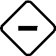

Königin Serena führt Krieg, fern im Süden in Konfurtah. Solange sie fort ist, regiert ihr Rat das Königreich Ankist, und dieser Rat sind wir: Häuser mit eigenen Überzeugungen, eigenen Provinzen und eigenen geheimen Zielen. Wir streiten, feilschen und stimmen ab. Und was wir beschliessen, bleibt für immer.
Das Spiel ist nicht kooperativ. Was dem Reich nützt, kann dir schaden, und umgekehrt. Genau darin liegt das Dilemma.
Jedes Haus hat ein Diary, sein Tagebuch. Darin stehen deine Figur, ihre Geschichte und drei Leisten für Punkte:
Hegemony
Dein Ansehen bei Krone und Reich.
Independence
Deine eigene Macht, unabhängig von der Krone.
Infamy
Dein schlechter Ruf. Er sammelt sich über die ganze Kampagne. Ab 5 Infamy kostet er dich am Ende Punkte, und es wird stufenweise teurer.
Der ClouNiemand weiss vorher, ob Hegemony oder Independence mehr wert sein wird. Ist das Reich am Ende der Kampagne stabil, zählt Hegemony mehr. Ist es zerrüttet, zählt Independence mehr. Wie stabil es wird, bestimmen wir mit unseren Beschlüssen. Die Kampagne erzählt mehrere Handlungsstränge. Endet einer, kommt ein Sticker auf die Landkarte, und die Waagen darauf zeigen, wie gut das Ende für das Reich war. So sieht man den Stand laufend. Wie viel mehr dann zählt, verrät erst das Finale.
3
Wohin das Reich kippt
Sechs Ideologien auf drei Achsen
Auf dem Ideology board liegt für jede Achse ein Schieber (Slider). Jedes Spiel beginnt mit allen dreien in der Mitte. Gewinnt eine Seite eine Abstimmung, rücken die Schieber in Richtung ihrer Ideologien vor, so weit, wie die Rückseite der Karte angibt, höchstens bis zum Rand, und jede dieser Ideologien bekommt einen Hegemony token. Die Tokens bleiben auf dem Board. Am Spielende bringen sie allen Punkte, deren Ideology card diese Ideologie nennt, egal wie sie abgestimmt haben.
Gleicher Name, zwei Dinge: Ein Hegemony token ist eine Marke auf dem Board und gehört niemandem. Am Spielende zählt er als 1 Hegemony-Punkt für jeden, dessen Karte die Ideologie nennt. Die Punkte trägst du in dein Diary ein.
4
Deine Ideology card
Dein geheimes Ziel für dieses eine Spiel
Zu Beginn jedes Spiels ziehst du eine Ideology card. Sie zeigt ein oder zwei Ziele. Am Spielende wird jedes Ziel für sich gewertet, und die Punkte zählen zusammen. Es gibt zwei Sorten:
Favored (ein Symbol): Diese Ideologie soll vorne liegen. • Für jeden Hegemony token bei ihr: 1 Hegemony-Punkt. • Liegt sie am Spielende vorne: dazu der Bonus auf der Karte.
Balanced (zwei Symbole einer Achse): Die Achse soll ausgeglichen bleiben. • Für jeden Token der Seite mit weniger Tokens: 1 Hegemony-Punkt. • Steht der Schieber am Spielende in der silbernen Zone: dazu der Bonus auf der Karte.
TraditionProgress
Die silberne Zone sind die Mitte und je ein Feld daneben. Vorne liegt eine Ideologie, sobald der Schieber auf ihrer Seite steht. Hier liegt also Progress vorne, und die Achse gilt zugleich als ausgeglichen. Genau in der Mitte liegt keine Seite vorne.
5
Ein Beispiel
Lyries Karte am Spielende, nach dem Regelheft
1
+3 ♛
+2 ♛
Links ein Symbol im Feld (Liberty): Favored.
Rechts zwei Symbole derselben Achse in einem Feld (Force und Diplomacy): Balanced. Nachgezeichnet, die echte Karte sieht etwas anders aus.
Tradition
Progress
Force●
Diplomacy
Order
Liberty●●●
Lyries Karte hat zwei Ziele: Favored Liberty mit Bonus +3 und Balanced Force/Diplomacy mit Bonus +2.
Liberty: 3 Hegemony tokens (●), weil Liberty in diesem Spiel drei Abstimmungen gewonnen hat. Der Schieber steht auf der Liberty-Seite. Das gibt 3 + 3 = 6 Hegemony-Punkte.
Force/Diplomacy: Force hat 1 Token, Diplomacy keinen. Gezählt wird die Seite mit weniger Tokens, also 0. Für 0 Tokens gibt es als Trost 1 Independence. Der Schieber steht in der silbernen Zone, das gibt den Bonus von 2 Hegemony-Punkten.
Zusammen: 8 Hegemony-Punkte und 1 Independence. Der Trost gilt bei jedem Ziel, dessen gezählte Seite keinen Token hat.
6
Ein Spiel
Vorbereiten, abstimmen, abrechnen
1
Vorbereiten
Jeder zieht verdeckt zwei Ideology cards und behält die mit der höheren Zahl. Wählen darfst du nicht.
Alle erhalten 7 Power, je 1 Gold, Food, Army und Materials und dazu den Ertrag ihrer Provinzen.
In den Topf (Power Pool) kommen 3 Power.
Dann kommen Chronicle cards ins Spiel, Spätfolgen alter Beschlüsse.
Zuletzt wählt jeder eine Investment card. Sie sagt, welche Ressource du am Spielende anlegen kannst und was es bringt. Wie viel du zahlen musst, zeigt die Timeline. Zahlst du nicht, gibt es eine Strafe.
Agenda cards sind deine geheimen Ziele über mehrere Spiele, aus der Geschichte deiner Figur. Die ersten bekommst du im ersten Spiel. Weitere bringen deine Geschichte und manche Beschlüsse. Jede hat eine Frist, und bezahlt wird am Spielende.
7
Ein Spiel
Dann 7 bis 9 Dilemmas, eines nach dem anderen
a
Vorlesen
Ein Dilemma ziehen und vorlesen. Die Rückseite bleibt verborgen.
Karte umdrehen, Folgen der Siegerseite vorlesen: Schieber bewegen sich, Spieler gewinnen oder verlieren etwas, ein Umschlag geht vielleicht auf.
↻ nächstes Dilemma
Manche Dilemmas tragen auf der Rückseite eine Sanduhr. Landet so eines auf Platz 7, 8 oder 9, endet das Spiel. Nach dem neunten ist ohnehin Schluss.
2
Abrechnen
Ideology cards aufdecken und werten. Wer am meisten Power übrig hat, bekommt 2 Independence, wer am zweitmeisten hat, 1. Dann Investments und Agendas bezahlen, zuletzt Steuern. Power verfällt, und das Ideology board beginnt neu.
8
Ein Dilemma
So sieht eine Frage an den Rat aus
DILEMMAERFUNDENES BEISPIEL
Die Kaufleute von Wylio verlangen, ihre Preise künftig selbst festzulegen. In der Hauptstadt warnt man vor Wucher. Soll der Rat den Gilden die Freiheit gewähren?
AYE Liberty, Progress
NAY Order, Effekt ?
Auf der Vorderseite steht nur die Vorschau: welche Ideologien bei Aye und bei Nay vorrücken, und ob ein bleibender Effekt folgt, gut , schlecht

oder ungewiss . Wie weit die Schieber rücken, steht erst auf der Rückseite. Dort können auch Folgen stehen, die vorne nicht angekündigt sind, etwa Ressourcen, Punkte oder neue Karten.
Hervorgehobene Wörter sind Keywords. Hier ist es eine Provinz. Gehört sie dir, trifft dich die Folge persönlich. Keywords können auch Figuren oder Stichworte aus deinem Diary sein. Hör genau hin, wenn deines fällt. Ob eine Folge den Leader trifft, steht erst auf der Rückseite.
Wer was will: Wer heute Liberty favorisiert, stimmt für Aye. Wem Wylio gehört, fürchtet, was auf der Rückseite steht. Und wer Order braucht, bietet dir vielleicht 2 Food, damit du passt.
9
Die Abstimmung
Power ist deine Stimme
Wer den Leader token hat, beginnt. Im ersten Spiel wird er ausgelost. Danach beginnt, wer ihn zuletzt behalten hat, auch im nächsten Spiel. Es geht im Uhrzeigersinn reihum, oft mehrmals. Bei deinem ersten Zug stimmst du ab oder passt.
Vote
Lege mindestens 1 Power auf dein Voting tile, blau für Aye oder rot für Nay. In späteren Zügen darfst du nachlegen (Raise) oder abwarten (Stay). Die Seite wechseln oder passen kannst du nicht mehr.
Pass
Du bist für diese Abstimmung raus und wählst eine Aktion:
Gather Power: Nach der Abstimmung teilst du dir mit allen, die das auch gewählt haben, was vor dieser Abstimmung im Topf lag. Ein Rest bleibt im Topf.
Become Moderator: Du nimmst den Moderator token und entscheidest ab jetzt jeden Gleichstand, bis ihn dir jemand abnimmt, auch über das Spiel hinaus.
eine Special Pass Action von einer Karte.
10
Wer führt, verlängert
Der Leader token wandert
Hast du nach deinem Zug allein am meisten Power auf deinem Voting tile, nimmst du sofort den Leader token, egal für welche Seite. Die Abstimmung endet nach dem Zug des Spielers rechts vom Leader. Der Leader selbst kommt also nicht mehr an die Reihe, und jeder neue Leader schiebt das Ende hinaus.
Beispiel: Anna, Beat, Corina und Dario sitzen im Uhrzeigersinn. Anna ist Leader, beginnt und legt 1 Power. Beat legt 2 und wird Leader. Jetzt sind noch Corina, Dario und Anna dran. Nimmt keiner Beat den Leader token ab, endet die Abstimmung nach Anna. Beat kommt nicht mehr dran.
Dann gewinnt die Seite mit mehr Power. Bei Gleichstand entscheidet der Moderator. Steht der Leader auf der Verliererseite, geht der Leader token an den Gewinner mit der meisten Power. Wer am Schluss Leader ist, muss mit den Folgen leben: Viele davon treffen den Leader direkt.
Gewinnen kostet, Verlieren ist gratis
Gewonnen: Deine Power geht in den Topf.
Verloren: Du bekommst deine Power zurück.
11
Feilschen
Am Ratstisch ist alles käuflich, fast
Während der Abstimmung darfst du offen verhandeln, drohen und bestechen. Bezahlt wird mit Ressourcen, und zwar für eine Gegenleistung: eine Stimme, ein Pass, der Entscheid des Moderators bei Gleichstand.
Ein Deal ist bindend, sobald die Ressourcen angenommen sind, auch wenn die Gegenleistung erst später fällig ist.
Ein Versprechen ohne Ressourcen bindet niemanden. Bluffen ist erlaubt.
Deals dürfen auch über mehrere Spiele laufen. Notiert sie im Diary.
Verboten: Ressourcen gegen Ressourcen tauschen, Power weitergeben, den Leader token oder den Moderator token handeln.
12
Ressourcen & Provinzen
Was von Spiel zu Spiel bleibt
Gold, Food, Army und Materials bleiben von Spiel zu Spiel liegen. Du brauchst sie für Investments, Agendas, Steuern und für Kosten, die dir Dilemmas auferlegen.
Mit 2 Gold kannst du jederzeit 1 beliebige andere Ressource bezahlen.
Verlangt eine Folge, dass du zahlst, und du kannst oder willst nicht, nimmst du für jede fehlende Ressource 1 Infamy. Investments und Agendas gehen nur gegen volle Bezahlung.
Steuern zahlst du immer: Am Spielende gibst du die Hälfte einer Ressourcenart ab, aufgerundet. Welche, zeigt die Timeline auf der Landkarte. Hast du 5 Food und Food wird besteuert, gibst du 3 ab.
Deine Provinzen
Im ersten Spiel wählt jedes Haus zwei der zwölf Provinzen (Regions). Was eine Provinz liefert, steht auf der Landkarte unter ihrem Namen. Ihre Gebäude liefern nur in Spielen ihrer Farbe, rot oder blau, und die Farben wechseln sich ab. Haben deine beiden Provinzen dieselbe Farbe, folgen fette auf magere Spiele.
13
Drei Ratschläge
für das erste Spiel
Power ist dein Budget für das ganze Spiel. Wer sie in der ersten Abstimmung verpulvert, schaut bei den nächsten zu. Wie viele Dilemmas kommen, weiss niemand: Ab dem siebten kann jedes das letzte sein. Passen ist oft der stärkste Zug.
Hör jedem Dilemma bis zum letzten Satz zu. Der Text deutet Folgen an, die in der Vorschau nicht stehen.
Behalte den Leader token im Auge. Wer ihn nach der Abstimmung hält, wird belohnt oder muss büssen. Manchmal willst du gewinnen, ohne ihn zu haben.
Die übrigen Regeln erklärt die Spielleitung am Tisch, den Rest lernen wir beim Spielen.
14
Kannst du es erklären?
Sechs Fragen, bevor es losgeht
Du legst 3 Power auf Aye, und Aye gewinnt. Wo ist deine Power jetzt?
Du legst Power und nimmst damit den Leader token. Kommst du in dieser Abstimmung noch einmal dran?
Deine Karte favorisiert Liberty. Liberty gewinnt zwei Abstimmungen, liegt am Spielende aber nicht vorne. Was bekommst du?
Du hast 2 Power auf Nay gelegt. Jetzt möchtest du doch lieber passen und Power sammeln. Geht das?
Du bietest einer Mitspielerin 2 Gold für 2 Food. Ist das erlaubt?
Eine Folge verlangt 3 Food von dir, du hast aber nur 2. Was passiert?
Die Antworten stehen auf der nächsten Seite.
15
Antworten
Und wo es steht
Im Topf. Wer später Gather Power wählt, teilt ihn sich (Seite 10).
Nein, ausser jemand nimmt dir den Leader token ab (Seite 11).
2 Hegemony-Punkte für die zwei Tokens, aber keinen Bonus (Seite 5).
Nein. Wer abgestimmt hat, kann nicht mehr passen, nur noch nachlegen oder abwarten (Seite 10).
Nein. Ressourcen gegen Ressourcen tauschen ist verboten. Ressourcen gibt es nur für eine Gegenleistung, etwa eine Stimme oder einen Pass (Seite 12).
Du zahlst die 2 Food und nimmst 1 Infamy für das fehlende. Oder du ersetzt das fehlende Food durch 2 Gold (Seite 13).